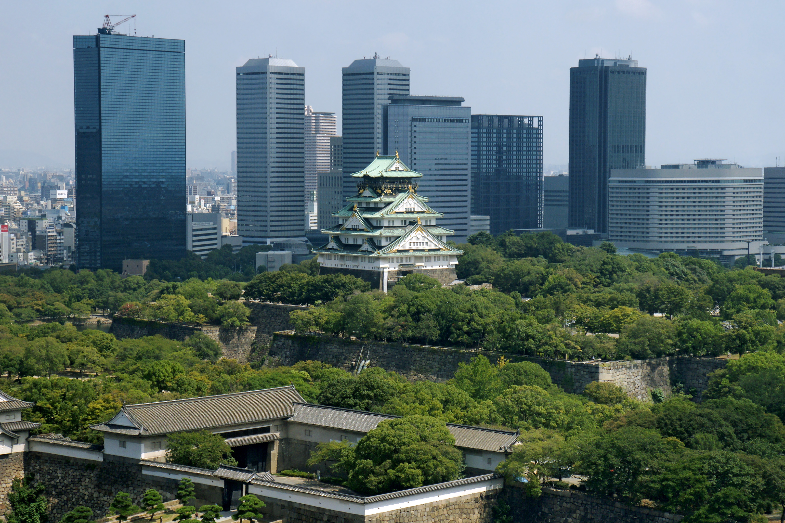

Japan(日本国)

Tokyo
Tokyo (東京, Tōkyō) is Japan's capital and the world's most populous metropolis. It is also one of Japan's 47 prefectures, consisting of 23 central city wards and multiple cities, towns and villages west of the city center. The Izu and Ogasawara Islands are also part of Tokyo.
Prior to 1868, Tokyo was known as Edo. Previously a small castle town, Edo became Japan's political center in 1603 when Tokugawa Ieyasu established his feudal government there. A few decades later, Edo had grown into one of the world's largest cities. With the Meiji Restoration of 1868, the emperor and capital moved from Kyoto to Edo, which was renamed Tokyo ("Eastern Capital"). Large parts of Tokyo were destroyed in the Great Kanto Earthquake of 1923 and the air raids of 1945.
Today, Tokyo offers a seemingly unlimited choice of shopping, entertainment, culture and dining to its visitors. The city's history can be appreciated in districts such as Asakusa and in many excellent museums, historic temples and gardens. Contrary to common perception, Tokyo also offers a number of attractive green spaces in the city center and within relatively short train rides at its outskirts.
Top 5 Things to do in Tokyo
Top attractions in Tokyo
- Tokyo Imperial Palace
- Sanja Matsuri
- Shibuya
- Asakusa
- Meiji Shrine

Kyoto
Kyoto (京都, Kyōto) served as Japan's capital and the emperor's residence from 794 until 1868. It is one of the country's ten largest cities with 1.5 million inhabitants and a modern face.
Over the centuries, Kyoto was destroyed by many wars and fires, but due to its exceptional historic value, the city was dropped from the list of target cities for the atomic bomb and escaped destruction during World War II. Countless temples, shrines and other historically priceless structures survive in the city today.
Top 5 Things to do in Kyoto
Top attractions in Kyoto
- Fushimi Inari Shrine
- Kiyomizudera Temple
- Kinkakuji (Golden Pavilion)
- Ginkakuji (Silver Pavilion)
- Kurama

Osaka
Osaka (大阪, Ōsaka) is Japan's second largest metropolitan area after Tokyo. It has been the economic powerhouse of the Kansai Region for many centuries. Osaka was formerly known as Naniwa. Before the Nara Period, when the capital used to be moved with the reign of each new emperor, Naniwa was once Japan's capital city, the first one ever known.
In the 16th century, Toyotomi Hideyoshi chose Osaka as the location for his castle, and the city may have become Japan's political capital if Tokugawa Ieyasu had not terminated the Toyotomi lineage after Hideyoshi's death and established his government in distant Edo (Tokyo).
Top 5 Things to do in Osaka
Top attractions in Osaka
- Osaka Castle
- Minami (Namba)
- Shinsekai
- Sumiyoshi Taisha
- Universal Studios
Nara
Japan's first permanent capital was established in the year 710 at Heijo, the city now known as Nara (奈良). Prior to that, the capital was moved to a new location whenever a new emperor ascended to the throne.
However, as the influence and political ambitions of the city's powerful Buddhist monasteries grew to become a serious threat to the government, the capital was moved away from Nara to Nagaoka in 784 and a few years later to Kyoto.
Nara is located less than one hour from Kyoto and Osaka. Due to its historical importance, the city remains full of cultural treasures, including some of Japan's oldest and largest temples.
Top 5 Things to do in Nara
Top attractions in Nara
- Todaiji Temple
- Kofukuji Temple
- Horyuji Temple
- Heijo Palace
- Toshodaiji Temple

Hiroshima
Hiroshima (広島) is the principal city of the Chugoku Region and home to over a million inhabitants.
When the first atomic bomb was dropped over Hiroshima on August 6, 1945, the city became known worldwide for this unenviable distinction. The destructive power of the bomb was tremendous and obliterated nearly everything within a two kilometer radius.
After the war, great efforts were taken to rebuild the city. Destroyed monuments of Hiroshima's historical heritage, like Hiroshima Castle and Shukkeien Garden, were reconstructed. In the center of the city a large park was built and given a name that would reflect the aspirations of the re-born city: Peace Memorial Park.
Top 5 Things to do in Hiroshima
Top attractions in Hiroshima
- Peace Park
- Hiroshima Castle
- Shukkeien Garden
- Miyajima
- Iwakuni